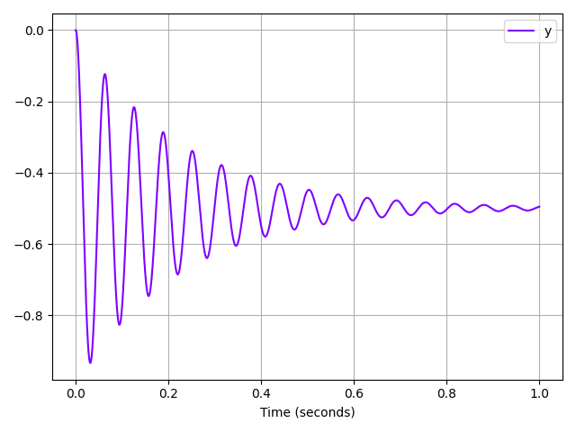
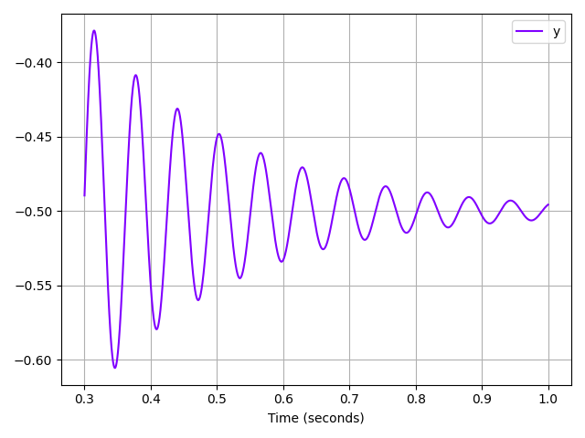

Note
Click here to download the full example code
Plot a time evolution¶
The time evolution of a discipline output can easily be plotted, using the FMUDiscipline.plot method.
from __future__ import annotations
from gemseo_fmu.disciplines.dynamic_fmu_discipline import DynamicFMUDiscipline
from gemseo_fmu.problems.fmu_files import get_fmu_file_path
Let us create a discipline to simulate a mass damper defined in an FMU model from 0 to 1 second with a time step of 0.1 milliseconds:
We only use the mass of the sliding mass [kg] and the spring constant [N/m] as inputs. The position of the mass [m] is used as output.
discipline = DynamicFMUDiscipline(
get_fmu_file_path("Mass_Damper"),
["mass.m", "spring.c"],
["y"],
initial_time=0.0,
final_time=1.0,
time_step=0.0001,
)
Firstly, we execute the discipline:
discipline.execute()
Out:
/builds/gemseo/dev/gemseo-fmu/.tox/doc/lib/python3.9/site-packages/pydantic/main.py:509: DeprecationWarning: Conversion of an array with ndim > 0 to a scalar is deprecated, and will error in future. Ensure you extract a single element from your array before performing this operation. (Deprecated NumPy 1.25.)
return cls.__pydantic_validator__.validate_python(
{'mass.m': array([1.]), 'spring.c': array([10000.]), 'y': array([ 0.00000000e+00, 0.00000000e+00, -5.00000000e-05, ...,
-4.95678376e-01, -4.95645675e-01, -4.95613439e-01]), 'Mass_Damper:time': array([0.000e+00, 1.000e-04, 2.000e-04, ..., 9.998e-01, 9.999e-01,
1.000e+00])}
Then,
we can easily access the local data, e.g the output "y":
discipline.local_data["y"]
Out:
array([ 0.00000000e+00, 0.00000000e+00, -5.00000000e-05, ...,
-4.95678376e-01, -4.95645675e-01, -4.95613439e-01])
But it is not very easy to read and plotting the time evolution of this variable is a better option:
discipline.plot("y", save=False, show=True)

Out:
/builds/gemseo/dev/gemseo-fmu/.tox/doc/lib64/python3.9/site-packages/pandas/core/frame.py:706: DeprecationWarning: Passing a BlockManager to Dataset is deprecated and will raise in a future version. Use public APIs instead.
warnings.warn(
/builds/gemseo/dev/gemseo-fmu/.tox/doc/lib64/python3.9/site-packages/pandas/core/frame.py:706: DeprecationWarning: Passing a BlockManager to Dataset is deprecated and will raise in a future version. Use public APIs instead.
warnings.warn(
<gemseo.post.dataset.lines.Lines object at 0x7f7eb8ff7670>
We can also restrict the view to a specific time window defined by the start time index:
discipline.plot("y", time_window=3000, save=False, show=True)

Out:
/builds/gemseo/dev/gemseo-fmu/.tox/doc/lib64/python3.9/site-packages/pandas/core/frame.py:706: DeprecationWarning: Passing a BlockManager to Dataset is deprecated and will raise in a future version. Use public APIs instead.
warnings.warn(
<gemseo.post.dataset.lines.Lines object at 0x7f7eb8ffec40>
or both the start and end time indices:
discipline.plot("y", time_window=[3000, 7000], save=False, show=True)
Out:
/builds/gemseo/dev/gemseo-fmu/.tox/doc/lib64/python3.9/site-packages/pandas/core/frame.py:706: DeprecationWarning: Passing a BlockManager to Dataset is deprecated and will raise in a future version. Use public APIs instead.
warnings.warn(
<gemseo.post.dataset.lines.Lines object at 0x7f7eb50d8520>
Total running time of the script: ( 0 minutes 0.471 seconds)
Download Python source code: plot_plot_time_evolution.py